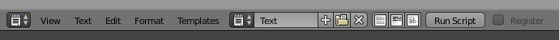

文本编辑器¶
Blender有一个窗口类型叫 文本编辑器 ，通过 窗口类型 菜单或 Shift-F11 快捷键即可进入该编辑器窗口。
标题¶
新打开的文本窗口是灰色空白的，外加一个简单的工具栏 文本标题。
文本标题。

已经打开一个文件的文本工具栏。
- 编辑器类型
- 标准编辑器选择按钮。
- 菜单
- 编辑器 菜单.
- 文本
- 数据块菜单。一旦文本被选择或新创建，标题将更改。 已经打开一个文件的文本工具栏。
- 显示
后面的三个按钮分别用于开启行号显示、文本换行和语法高亮显示。
行号，文本换行，语法高亮显示
- 运行脚本/脚本节点更新
- 执行文本作为Python脚本
Alt-P. 请参阅 Script and Templates. - 注册
- Todo.
- 标签
- 如果文本保存在内部或外部，并且存在未保存的外部文件更改，则此标签显示。
脚本和模板¶
最方便的按键是 Alt-P 缓冲区的内容被内置的Blender解释器解析。在进行之前，值得注意的是，Blender配有一个内置的功能齐全的Python解释器，并具有许多特定于Blender的模块，如 脚本与扩展Blender 部分所述。
文本编辑器 如今已经包含一些专用的Python脚本，可以添加一些有用的属性工具，就像一个 class/function/variable浏览器。可以通过 文本 --> 文本插件 菜单使用该功能。
主视图¶
敲击键盘可以在文本缓存中输入文本。跟平常一样，按下拖动并松开 LMB 用于选择文本。
Tip
文本窗口的其他用途
在你想要分享你的 .blend 文件的时候，文本窗口也很方便。可以在 文本 窗口添加一个 README 文本，解释该blend文件的内容。务必保证在保存时该文本是可见的！